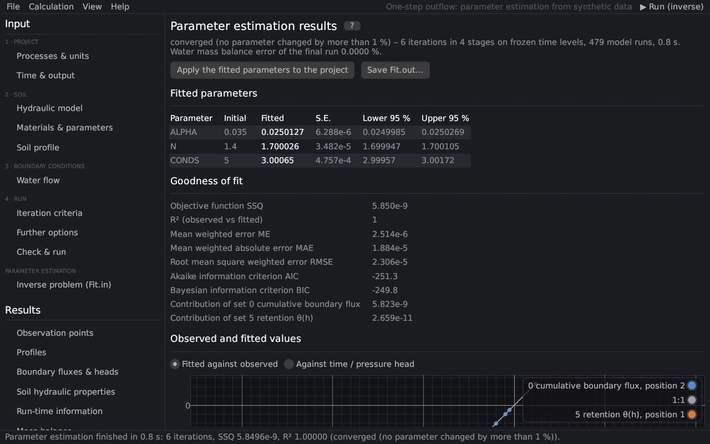

Results (post-processing)
Parameter estimation results
The page shows the run and the results of a parameter estimation, the content of Fit.out of HYDRUS-1D (Inverse Solution Information).


During the run
The iteration table of the first starting point is filled live (iteration, objective function SSQ, parameter values), and the finished starting points are listed. ■ Stop ends the estimation.
Results
| Section | Content |
|---|---|
| Fitted parameters | initial estimate, fitted value, standard error (S.E.) and the 95 % confidence interval of every fitted parameter Šimůnek and Hopmans (2002) |
| Goodness of fit | SSQ, R² of observed against fitted values, mean error ME, mean absolute error MAE, RMSE, AIC Akaike (1974), BIC Schwarz (1978) and the contribution of every measurement set to SSQ |
| Observed and fitted values | fitted against observed values with the 1:1 line, or observed (points) and fitted (line) values of one measurement set against time, pressure head or depth |
| Correlation matrix | correlations between the fitted parameters; |r| > 0.95 is highlighted (the data cannot separate these parameters) |
| Starting points | the further starting points with their initial values, final SSQ, iterations and why they stopped; the result of the lowest SSQ is shown |
| Iterations | SSQ and the parameters of every iteration |
Apply the fitted parameters to the project writes the fitted values into the materials and makes them the initial estimates of a new estimation. Save Fit.out… writes the results in the layout of HYDRUS-1D 4.17. The results of the final run with the fitted parameters fill the other results pages.
Interpreting the results
- Wide confidence intervals or high correlations mean that the data do not determine the parameters well: fit fewer parameters, add different kinds of data (e.g. retention points to outflow data) or use constraints.
- Compare the objective functions of the starting points: if they end at different SSQ values, the objective function has several local minima.
See parameter estimation (theory) for the definitions.
Literature cited in this topic
- Akaike, H. (1974). A new look at the statistical model identification. IEEE Transactions on Automatic Control 19(6): 716–723. doi:10.1109/TAC.1974.1100705
- Schwarz, G. (1978). Estimating the dimension of a model. The Annals of Statistics 6(2): 461–464. doi:10.1214/aos/1176344136
- Šimůnek, J., and J. W. Hopmans (2002). Parameter optimization and nonlinear fitting. In: J. H. Dane and G. C. Topp (eds.), Methods of Soil Analysis, Part 4, Physical Methods, SSSA Book Series No. 5, Soil Science Society of America, Madison, WI, pp. 139–157.
All sources: References.